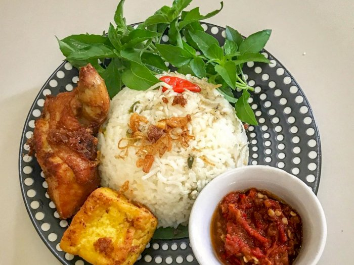

Nasi Padang
Rp 35.000,00
BeliNasi Goreng

Rp 30.000,00
BeliNasi Kuning

Rp 32.000,00
BeliNasi Uduk

Rp 27.000,00
BeliNasi Liwet
Rp 29.000,00
BeliFYI
Nasi Padang
Nasi padang adalah nasi putih yang disajikan dengan berbagai macam lauk-pauk khas Indonesia. Kata padang merujuk pada ibu kota provinsi Sumatra Barat: Padang.
------------------------
Nasi Goreng
nasi yang digoreng dan diaduk dalam minyak goreng, margarin, atau mentega. Biasanya ditambah kecap manis, bawang merah, bawang putih, asam jawa, lada dan bumbu-bumbu lainnya; seperti telur, ayam, dan kerupuk.
------------------------
Nasi Kuning
Nasi kuning adalah makanan khas Indonesia. Makanan ini terbuat dari beras yang dimasak bersama dengan kunyit serta santan dan rempah-rempah. Dengan ditambahkannya bumbu-bumbu dan santan, nasi kuning memiliki rasa yang lebih gurih daripada nasi putih.
------------------------
Nasi Uduk
Nasi uduk adalah hidangan yang dibuat dari nasi putih yang diaron dan dikukus dengan santan, serta dibumbui dengan pala, kayu manis, jahe, daun serai dan merica. Hidangan ini mulai dibuat penduduk pulau Jawa sekitar tahun 1910-1924 dan dipopulerkan oleh Hindia Belanda setelahnya.
------------------------
Nasi Liwet
Nasi liwet adalah hidangan nasi khas Indonesia yang dimasak dengan santan, kaldu ayam, dan rempah-rempah Nasi kukus biasanya dimasak dalam air, tetapi nasi liwet adalah nasi yang dimasak dengan santan, kaldu ayam, daun salam dan serai, sehingga memberikan nasi rasa yang kaya, aromatik, dan gurih.
------------------------